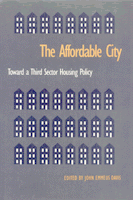

Advocates and experts weigh the value of recent community-based, nonmarket housing programs
Advocates and experts weigh the value of recent community-based, nonmarket housing programs


 Advocates and experts weigh the value of recent community-based, nonmarket housing programs
Advocates and experts weigh the value of recent community-based, nonmarket housing programs

|  |
The Affordable CityToward a Third Sector Housing Policyedited by John Emmeus Daviscloth EAN: 978-1-56639-109-2 (ISBN: 1-56639-109-1) |
Forced in the 1980s to develop new sources of funding, municipalities are now creating new strategies for producing housing citizens can afford. One of the most promising of those schemes is third sector housing, a private non market alternative to publicly owned projects. The ten essays comprising The Affordable City provide case studies of political struggles to move toward this model in such cities as Burlington, Boston, and San Diego.
Excerpt available at www.temple.edu/tempress
Acknowledgments
Introduction: Toward a Third Sector Housing Policy – John Emmeus Davis
Part I: Components and Dilemmas of a Third Sector Housing Policy
1. Social Housing: U.S. Prospect, Canadian Reality – Peter Dreier and J. David Hulchanski
2. Beyond the Market and the State: The Diverse Domain of Social Housing – John Emmeus Davis
3. Diminishing Returns: A Critical Look at Subsidy Recapture – Helen S. Cohen
4. Community-Based Housing Strengths of the Strategy amid Dilemmas that Won't Go Away – Rachel G. Bratt
5. Will All Tenants Win? – Woody Widrow
Part II: Third Sector Housing in Action: Policies, Programs, and Plans
6. Building the Progressive City: Third Sector Housing in Burlington, Vermont – John Emmeus Davis
7. Boston in the 1980s: Toward a Social Housing Policy – Chuck Collins and Kirby White
8. the Legacy of Mt. Laurel: Maintaining Affordability in New Jersey's Inclusionary Developments – Alan Mallach
9. Housing Trust Funds – Mary E. Brooks
10. Zigzagging toward Long-Term Affordability in the Sunbelt: The San Diego Housing Trust Fund – Nico Calavita, Kenneth Grimes, and Susan Reynolds
About the Contributors
Index
John Emmeus Davis has directed housing policy in Burlington, Vermont, for over a decade. He has also taught at Tufts, New Hampshire College, and MIT.
Contributors: Peter Dreier, J. David Hulchanski, Helen S. Cohen, Rachel G. Gratt, Woody Widrow, Chuck Collins, Kirby White, Allan Mallach, Mary E. Brooks, Nico Calavita, Kenneth Grimes, Susan Reynolds, and the editor.
Conflicts in Urban and Regional Development, edited by John R. Logan and Todd Swanstrom.
Conflicts in Urban and Regional Development, edited by John R. Logan and Todd Swanstrom, includes books on urban policy and issues of city and regional planning, accounts of the political economy of individual cities, and books that compare policies across cities and countries.
© 2015 Temple University. All Rights Reserved. This page: http://www.temple.edu/tempress/titles/1128_reg.html.